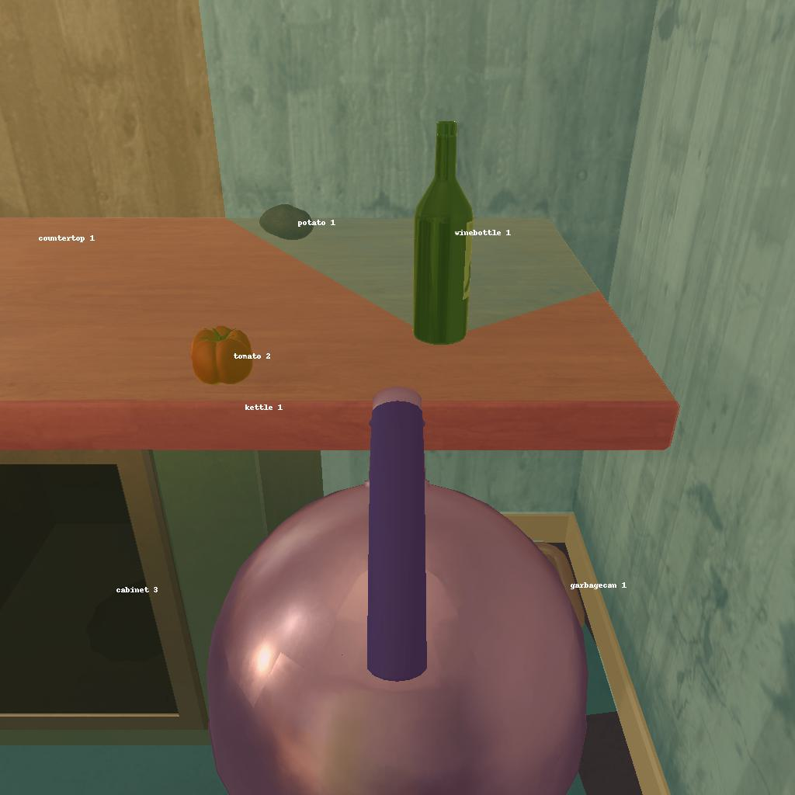

---------------------------------------------------------task: 26---------------------------------------------------------
--------------------------------------------------------------------------------------------------------------------------------------------------------------------
--------------------------------------------------------------------------------------------------------------------------------------------------------------------
Step:--------------------------------------------------------------------------17-------------------------------------------------------------------------------
----------------------------------------
VLM Prompt:
Image1:
Image2:
Image3:
**Instruction**
1. Analyze the provided image to identify all visible household objects, focusing on those relevant to the task description "find two kettle and put them in cabinet."
2. Use the analysis of the image and the task hint "The agent must find an object of the desired type, pick it up, find the correct location to place it, put it down there, then look for another object of the desired type, pick it up, return to previous location, and put it down there with the other object." to answer the question: what is the most reasonable action in the choices for the task description "find two kettle and put them in cabinet"?
4. Decide and write the answer using the template: The answer is: (i): , where i is the real number. If there is no desired object in the image, search every place based on **Initial Observation** to find the object. And if no one is exactly correct, choose a similar answer.
**Initial Observation**
You are in the middle of a room. Looking quickly around you, you can see countertop (1), coffeemachine (1), cabinet (1-4), drawer (1-8), sink (1), sinkbasin (1), garbagecan (1), fridge (1), microwave (1), dresser (1), sidetable (1)
**Answer Choices**
(1): go to countertop 1
(2): go to coffeemachine 1
(3): go to cabinet 1
(4): go to cabinet 2
(5): go to drawer 1
(6): go to sink 1
(7): go to sinkbasin 1
(8): go to garbagecan 1
(9): go to cabinet 4
(10): go to drawer 2
(11): go to fridge 1
(12): go to microwave 1
(13): go to dresser 1
(14): go to sidetable 1
(15): go to drawer 3
(16): go to drawer 4
(17): go to drawer 5
(18): go to drawer 6
(19): go to drawer 7
(20): go to drawer 8
(21): open cabinet 3
(22): examine cabinet 3
**Answer**
Let's think step by step by following the instructions.
----------------------------------------
----------------------------------------
Original Response:
First, we need to find two kettles. In the images provided, we can see one kettle labeled as "kettle 1" on the countertop. Since we only see one kettle, we need to search for another one. The task hint suggests that we need to pick up the first kettle, find the correct location (which is the cabinet, as per the task description), put it down there, and then look for another kettle.
Based on the Initial Observation, there are multiple cabinets and drawers to check for the second kettle. However, in the image, we can see that "cabinet 3" is already opened and visible with no kettle inside. Therefore, we can rule out option (21) to open cabinet 3 and (22) to examine cabinet 3 since it's already open and has no kettle.
The most reasonable next action would be to pick up the visible kettle from the countertop. However, "pick up the kettle" is not one of the provided answer choices. Given the choices, the closest action to picking up the kettle would be to go to the location of the kettle. Since the kettle is on "countertop 1," the most reasonable action from the provided choices would be:
The answer is: (1): go to countertop 1
After going to the countertop, we would pick up the kettle, then proceed to open and place it in a cabinet before looking for the second kettle.
----------------------------------------
----------------------------------------
>>> Refine Original VLM Response and Get Pure Action: go to countertop 1
After going to the countertop, we would pick up the kettle, then proceed to open and place it in a cabinet before looking for the second kettle
----------------------------------------
-----------------------------------------------------------------
Running time: 14.115952253341675 seconds
Total Money: 17.14307
-----------------------------------------------------------------
-----------------------------------------------------------------
Text Observation:Nothing happens.
-----------------------------------------------------------------
UNSUCCEED